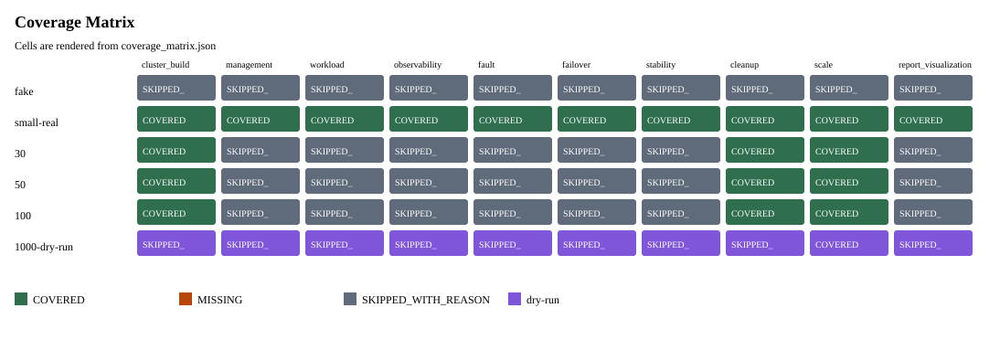
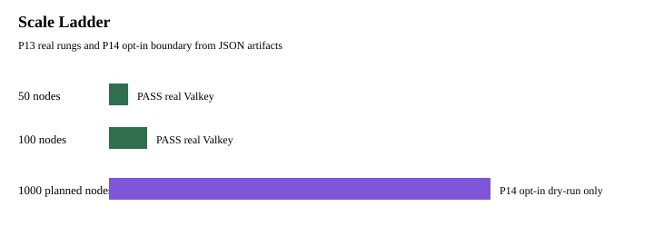
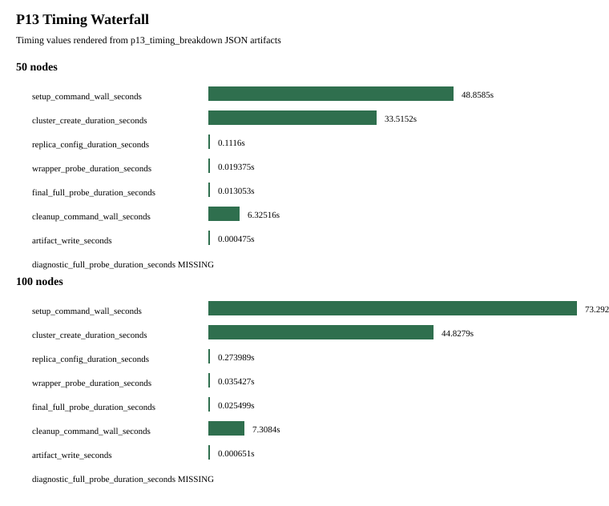

Root commit SHA: 4ff3e726f911bd5146ffd18381985d6b58785ee0
Status: PASS. Metrics: 419. Coverage cells: 60.
P13 real rungs: 2. P14 opt-in dry-run: True.
Small-real parity surfaces: 8. Missing metrics: 1. Skipped metrics: 26.
Scale build rungs: [30, 50, 100]. Measured build metrics: 68. Missing build metrics: 16.
Fault/failover rungs: [30, 50, 100]. Real rungs: 3. Missing metrics: 3.
Stability soak profiles: [6, 30, 50, 100]. Measured profiles: 1. Resource-aware profiles: 4.
| Path | Type | Status | SHA256 |
|---|---|---|---|
artifacts/loop_engineering/reports/audit_report.json | audit_report | PASS | 32af431483b2 |
artifacts/loop_engineering/reports/provenance_graph.json | provenance_graph | PASS | e4eb04e3b689 |
artifacts/loop_engineering/reports/metric_catalog.json | metric_catalog | PASS | 896eac1db245 |
artifacts/loop_engineering/reports/coverage_matrix.json | coverage_matrix | PASS | 02de6937fa32 |
artifacts/loop_engineering/reports/p13_p14_scale_audit.json | p13_p14_scale_audit | PASS | cf828ccb272f |
artifacts/loop_engineering/reports/small_real_parity_audit.json | small_real_parity_audit | PASS | 126eb526a986 |
artifacts/loop_engineering/reports/scale_build_metrics.json | scale_build_metrics | PASS | e410abca3faf |
artifacts/loop_engineering/reports/fault_failover_scale.json | fault_failover_scale | PASS | e41de72d45c6 |
artifacts/loop_engineering/reports/stability_soak_metrics.json | stability_soak_metrics | PASS | 2253cfb49fc3 |
artifacts/phases/P13_SCALE_LADDER_50_100/scale_ladder_report.json | scale_ladder_report | PASS | 8f361663f6cc |
artifacts/phases/P13_SCALE_LADDER_50_100/p13_timing_breakdown_scale_50.json | p13_timing_breakdown | PASS | c8bdde24a12f |
artifacts/phases/P13_SCALE_LADDER_50_100/p13_timing_breakdown_scale_100.json | p13_timing_breakdown | PASS | fc697ee2aecd |



{kind=link}
{kind=link}
{kind=link}